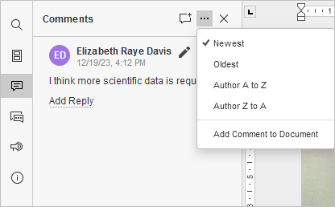

Komentarisanje
Presentation Editor vam omogućava da održavate dosledan timski tok rada: da delite fajlove i fascikle, zajednički uređujete prezentacije u realnom vremenu, komunicirate direktno u editoru i čuvate verzije prezentacije za buduću upotrebu.
U Presentation Editor-u možete ostavljati komentare na sadržaj prezentacija bez njihovog direktnog uređivanja. Za razliku od poruka u ćaskanju, komentari ostaju vidljivi dok se ne obrišu.
Dodavanje komentara i odgovaranje
Da biste ostavili komentar na određeni objekat (tekstualno polje, oblik itd.):
- izaberite objekat za koji smatrate da sadrži grešku ili problem,
-
prebacite se na karticu Umetanje ili Saradnja na gornjoj traci sa alatkama i kliknite na dugme Komentar, ili
koristite ikonicu na levoj bočnoj traci da otvorite panel Komentari, pa kliknite na dugme Dodaj komentar na gornjoj traci panela ili kliknite na simbol Više i izaberite opciju Dodaj komentar dokumentu da biste ostavili komentar na celu prezentaciju, ili
kliknite desnim tasterom miša na izabrani objekat i izaberite opciju Dodaj komentar iz menija,
- unesite potreban tekst,
- kliknite na dugme Dodaj komentar/Dodaj.
Objekat koji ste komentarisali biće označen ikonicom . Da biste videli komentar, kliknite na ovu ikonicu.
Da biste dodali komentar na određeni slajd, izaberite slajd i koristite dugme Komentar na kartici Umetanje ili Saradnja na gornjoj traci sa alatkama. Dodati komentar će biti prikazan u gornjem levom uglu slajda.
Da biste kreirali komentar na nivou prezentacije koji nije povezan ni sa jednim objektom ili slajdom, kliknite na ikonicu na levoj bočnoj traci da otvorite panel Komentari i koristite vezu Dodaj komentar dokumentu. Komentari na nivou prezentacije mogu se videti u panelu Komentari. Ovde su dostupni i komentari povezani sa objektima i slajdovima.
Bilo koji drugi korisnik može odgovoriti na dodati komentar postavljanjem pitanja ili izveštavanjem o obavljenom radu. U tu svrhu kliknite na vezu Dodaj odgovor koja se nalazi ispod komentara, unesite tekst odgovora u polje za unos i kliknite na dugme Odgovori.
Ako koristite Strogi režim zajedničkog uređivanja, novi komentari koje dodaju drugi korisnici postaće vidljivi tek nakon što kliknete na ikonicu u gornjem levom uglu gornje trake sa alatkama.
Upravljanje komentarima
Dodate komentare možete upravljati pomoću ikonica u balonu komentara ili u panelu Komentari na levoj strani:
-
sortirajte dodate komentare klikom na ikonicu :
- po datumu: Najnoviji ili Najstariji.
- po autoru: Autor od A do Z ili Autor od Z do A.
-
po grupi: Sve ili izaberite određenu grupu sa liste. Ova opcija sortiranja je dostupna ako koristite verziju koja uključuje ovu funkcionalnost.

- izmenite trenutno izabrani komentar klikom na ikonicu ,
- obrišite trenutno izabrani komentar klikom na ikonicu ,
- zatvorite trenutno izabranu diskusiju klikom na ikonicu ako je zadatak ili problem naveden u komentaru rešen; nakon toga diskusija dobija status rešen. Da biste je ponovo otvorili, kliknite na ikonicu ,
- ako želite grupno upravljanje komentarima, otvorite padajući meni Reši na kartici Saradnja. Izaberite jednu od opcija za rešavanje komentara: reši trenutne komentare, reši moje komentare ili reši sve komentare u prezentaciji.
Dodavanje pominjanja
Pominjanja možete dodavati samo u komentare koji se odnose na sadržaj prezentacije, a ne na samu prezentaciju.
Prilikom unosa komentara možete koristiti funkciju pominjanja koja vam omogućava da skrenete nečiju pažnju na komentar i pošaljete obaveštenje pomenutom korisniku putem e-pošte i Talk alata.
Da biste dodali pominjanje,
- unesite znak „+“ ili „@“ bilo gde u tekstu komentara – otvoriće se lista korisnika portala. Da biste pojednostavili pretragu, možete početi da kucate ime u polju za komentar – lista korisnika će se menjati kako kucate.
- izaberite odgovarajuću osobu sa liste. Ako fajl još uvek nije podeljen sa pomenutim korisnikom, otvoriće se prozor Podešavanja deljenja. Tip pristupa Samo za čitanje je podrazumevano izabran. Promenite ga ako je potrebno.
- kliknite na dugme U redu.
Pomenuti korisnik će dobiti obaveštenje putem e-pošte da je pomenut u komentaru. Ako je fajl podeljen, korisnik će takođe dobiti odgovarajuće obaveštenje.
Uklanjanje komentara
Da biste uklonili komentare,
- kliknite na dugme Ukloni na kartici Saradnja na gornjoj traci sa alatkama,
-
izaberite odgovarajuću opciju iz menija:
- Ukloni trenutne komentare – uklanja trenutno izabrani komentar. Ako komentar sadrži odgovore, svi odgovori će takođe biti uklonjeni.
- Ukloni moje komentare – uklanja komentare koje ste vi dodali, bez uklanjanja komentara drugih korisnika. Ako vaš komentar sadrži odgovore, svi odgovori će takođe biti uklonjeni.
- Ukloni sve komentare – uklanja sve komentare u prezentaciji koje ste vi i drugi korisnici dodali.
Da biste zatvorili panel sa komentarima, ponovo kliknite na ikonicu na levoj bočnoj traci.